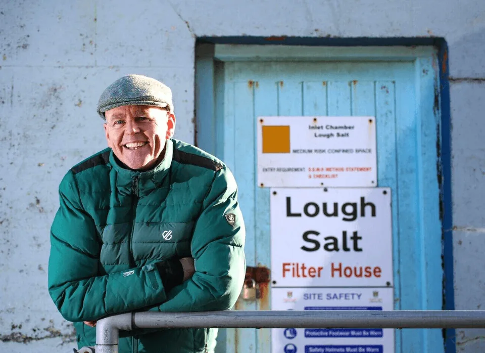
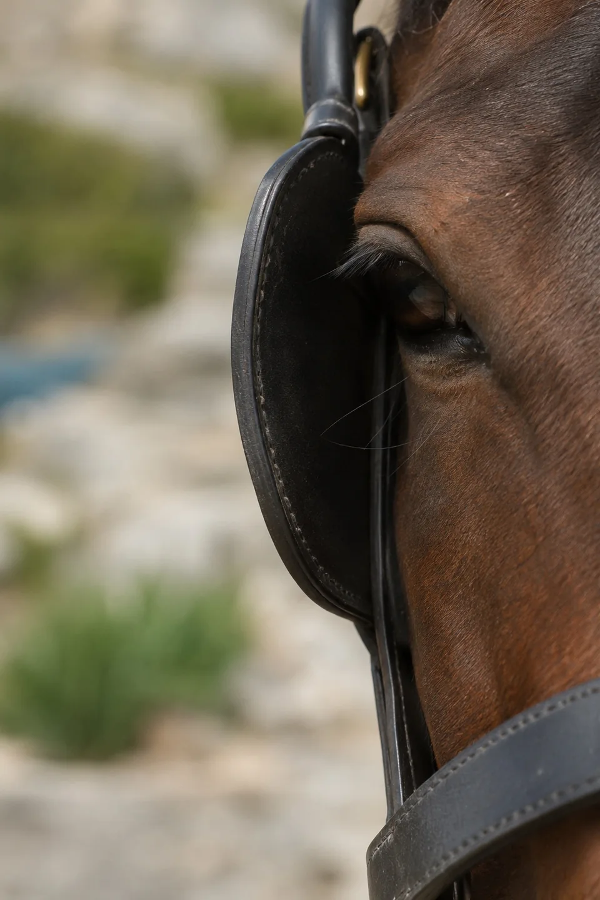
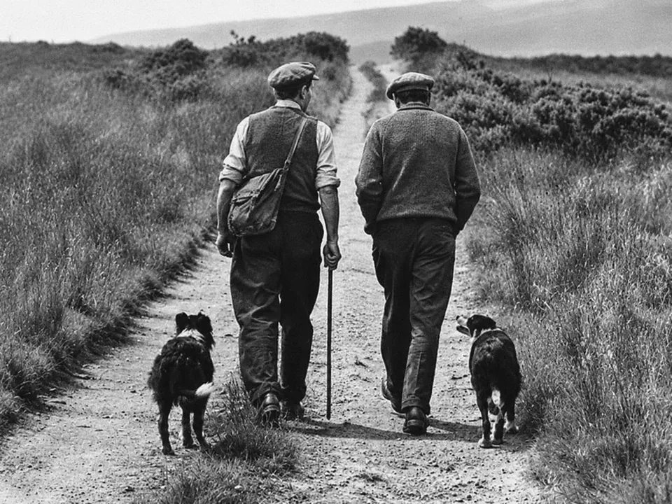
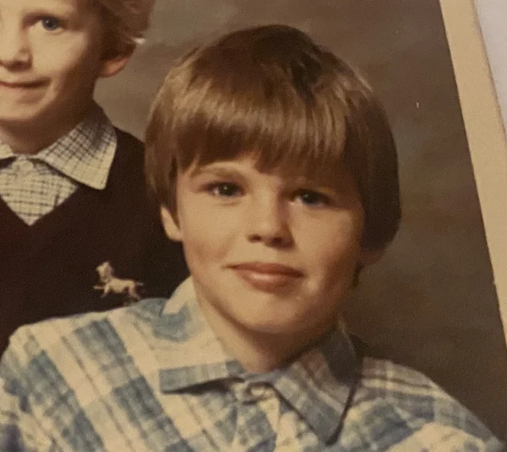
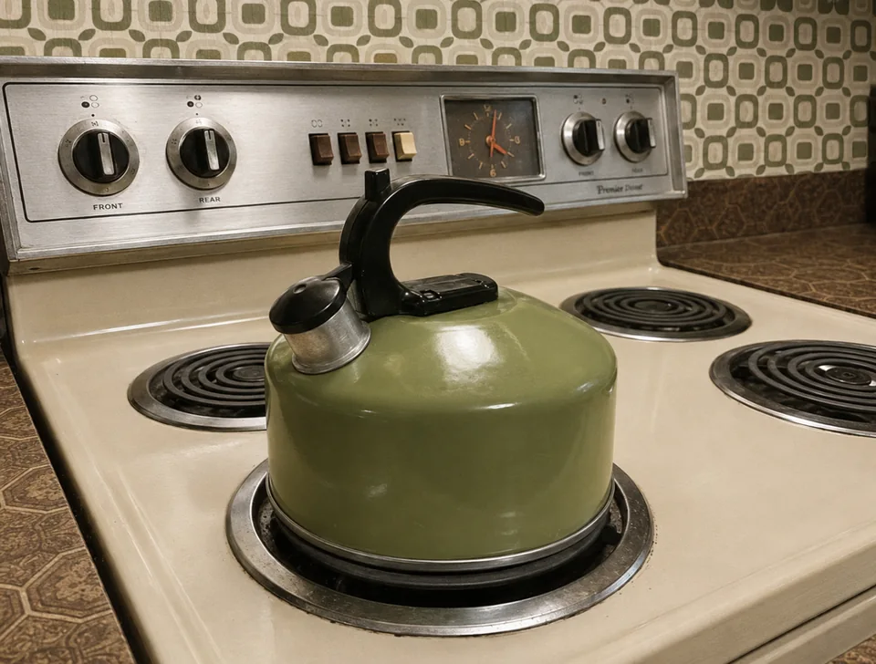
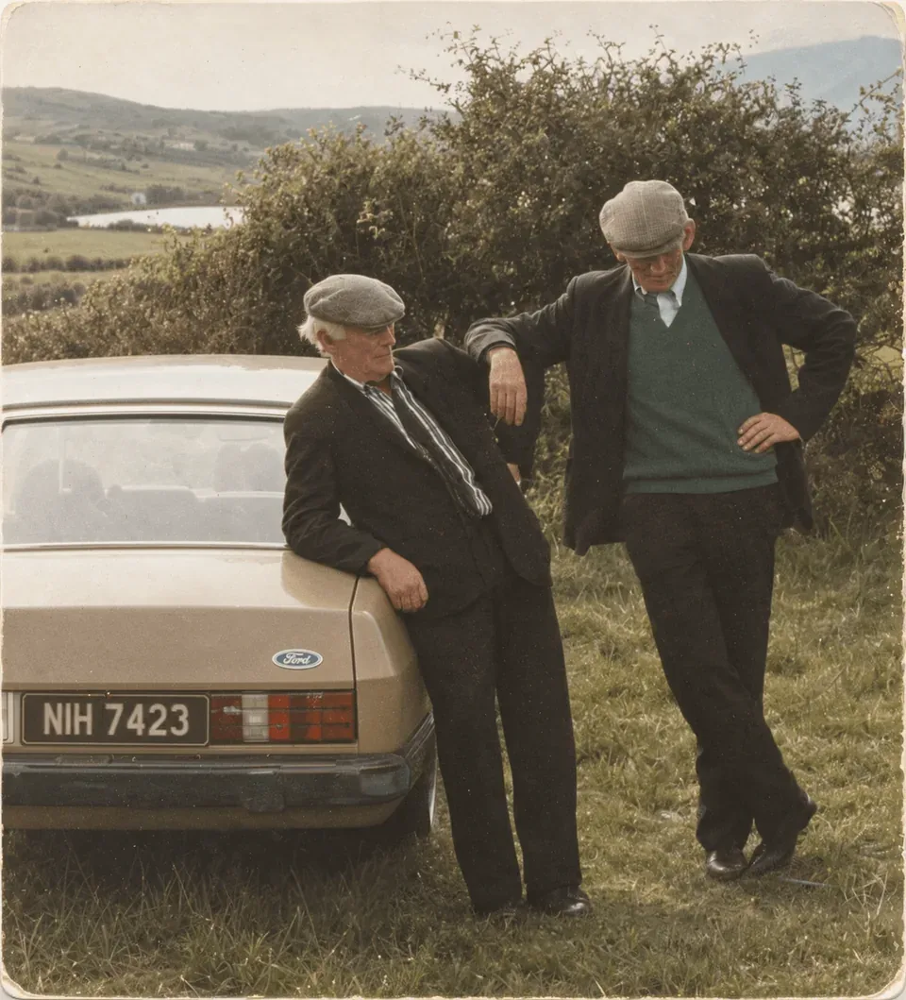

Post image to follow
Post to follow
Selected LinkedIn post
One-to-one and team coaching for experienced leaders in business and education, offering time to step back from the day-to-day, talk things through and consider what you might not be seeing.
After 25 years in public leadership, including serving as a Government Minister, I've come to appreciate the value of listening, asking questions and looking at familiar situations from a different angle.
I've experienced the pressures of leadership first-hand. The difficult decisions, competing expectations and responsibility that comes with leading people. I've also seen how much can change when we question our assumptions and make room for different perspectives.
Today, I bring that experience together with my professional coaching training to work with leaders in business and education, creating space for conversations that might not otherwise happen.

You can be experienced, capable and confident in your role, yet still find yourself questioning aspects of how you lead.
You're managing a team that isn't quite working as you'd hoped. You're dealing with competing expectations or finding that the demands of the job are following you home.
Or perhaps things are going well, but you're beginning to question some of the assumptions and established ways of working that you've taken for granted.
How you approach a conversation, respond to a difficult situation or make a decision can have an influence far beyond the immediate moment. And when you're right in the middle of it all, it's difficult to see that wider picture.
There's value in taking time to look at what's happening from another angle. To recognise strengths you may have overlooked and question what you've always assumed to be true.

Sometimes a different perspective is all it takes to see something you hadn't considered before.

Even the most experienced leaders don't always have someone they can talk to openly about the things on their mind.
A decision they're weighing up.
A situation they keep coming back to.
An idea they've been considering but haven't quite acted on.
One-to-one coaching offers the opportunity to step away from the day-to-day, explore those thoughts, question familiar assumptions and consider possibilities they might not have seen before.
Explore One-to-One CoachingEvery organisation has people with valuable experience, ideas and insights. But how often do those closest to the day-to-day work have a say in the decisions that affect them?
I like to include the quietest voice.
I listen harder to the person of few words.
Everyone's voice matters.
Every voice counts.
Team coaching brings people together to look at how they work, communicate and contribute.
It's an opportunity to hear what might otherwise go unsaid, challenge established ways of doing things and consider what could work better.
Explore Team CoachingCoaching with me begins with a conversation.
No set answers, no prescribed way of leading and no expectation that you need to become somebody different.
Experienced leaders don't always need to acquire something new. Sometimes they need the opportunity to recognise and use what's already there.
I bring my own experience of leadership, but I'm just as interested in yours. I listen, ask questions and sometimes challenge the assumptions that shape how you see a situation.
My approach draws on my years in leadership, my professional coaching training and my interest in how people think, learn and work together.
I've also discovered that the Irish language has a remarkable way of looking at things. Sometimes a few words passed down through generations can make you stop and think.
There might be a story, a little humour or an Irish saying along the way. But the conversation always comes back to what's relevant to you.
The aim isn't to give you another list of things to do. It's to create the space to think, recognise possibilities and decide what you want to take forward.
Space for a client’s own words about working with Joe, what stood out and what they found valuable.
Approved testimonial to follow · approximately 30–50 words

A lot has changed since I was a young lad growing up in Donegal in the 1970s.
There have been a few unexpected turns along the way, many interesting people, plenty of lessons and a fair few mistakes.
And I'm still learning.
A little more about JoeBook a time for a video call, or send me a message if you'd like to find out more.

We'll have a short, complimentary call to discuss what you're looking for and whether coaching might be useful.

If we decide to work together, we'll discuss what that might look like, whether that's meeting online or in person, and arrange a time that works for us both.
Joe offers keynote speaking engagements tailored to your group’s needs. To discuss your event, book a call or send a message below.
Choose a date and time that suits you for a short, complimentary video call. You'll receive an email confirmation with a link to join.
Book a conversationEvery Friday, I share a few thoughts on LinkedIn. Sometimes it's a story, an Irish saying or something I've come across that makes me stop and think.
Here are a few from my Friday Corner.
Selected LinkedIn post
Selected LinkedIn post
Selected LinkedIn post